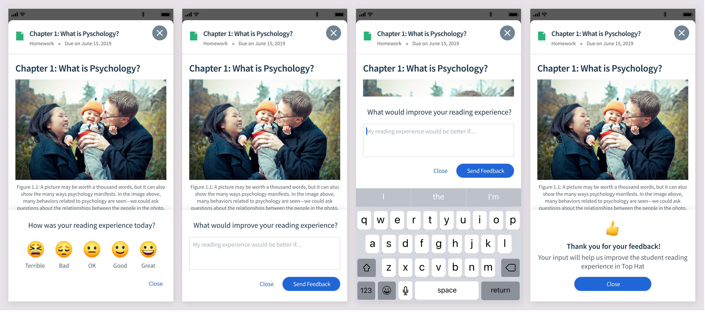
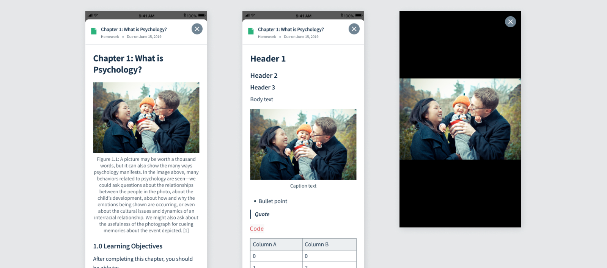
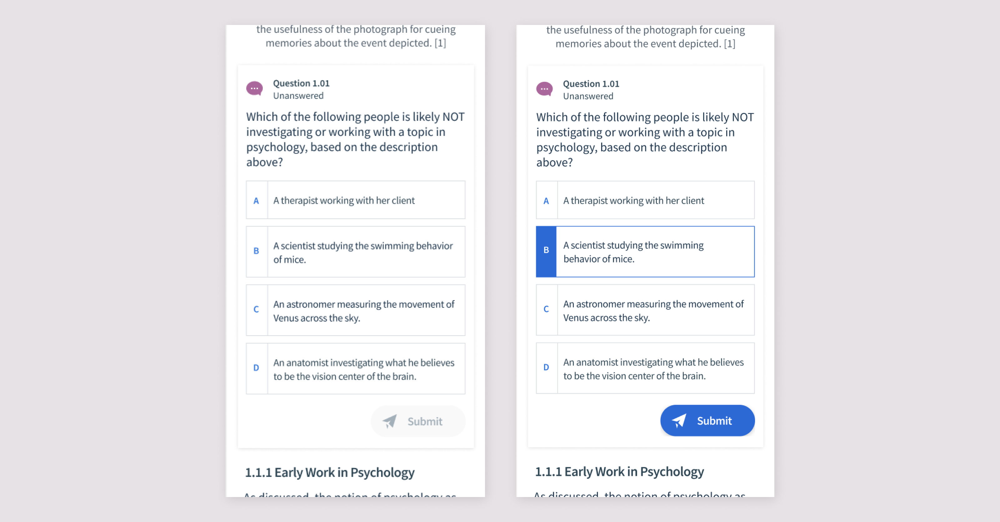
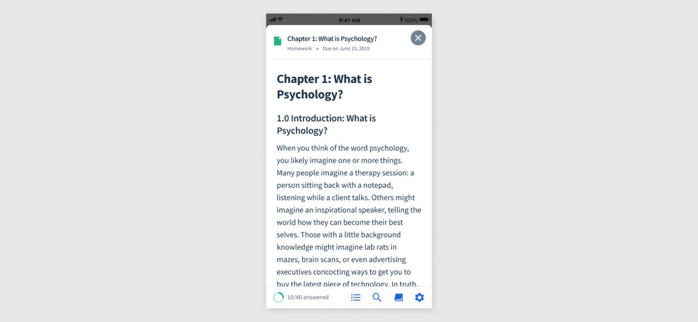
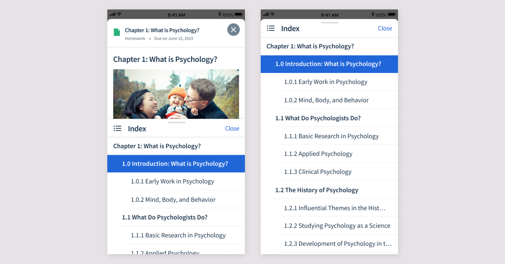
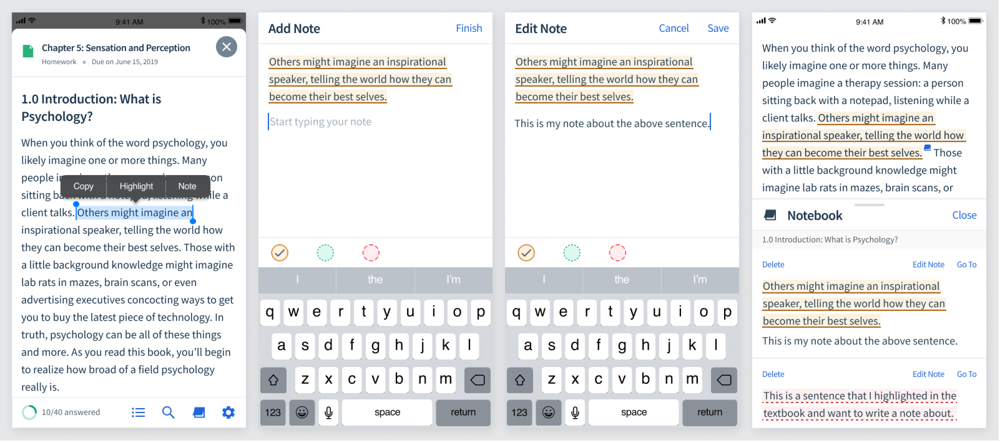
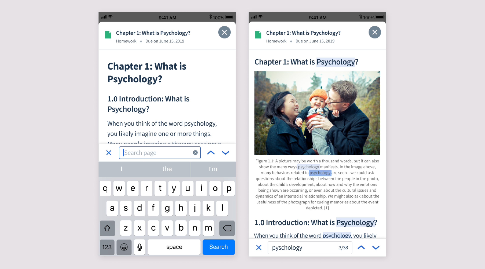
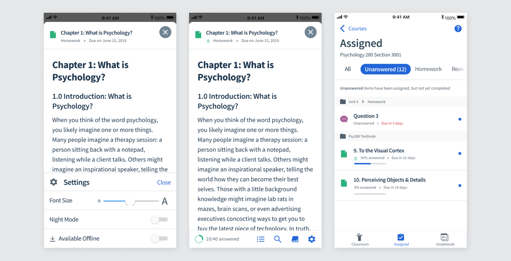

Building a vision for mobile Pages
Students wanted to read their textbooks on their phones wherever they were, but the mobile experience was not up to par with web. To define what a strong mobile Pages experience should include, I looked at the problem from several angles.
Identify which capabilities were required simply to reach parity with the existing web reading experience.
Look at other mobile reading apps and identify mobile-specific patterns or opportunities that did not exist on web.
Talk to students about how they used textbooks, where they read, and what they needed on mobile.
Understand which web features students used most frequently and how they were using them.
Create an ongoing way to measure the experience and hear directly from students after launch.
Getting in-app feedback
I designed an in-app survey that would occasionally appear while a student was reading. It served two purposes: give us a quantitative measure we could track over time, and collect qualitative feedback about what was still frustrating or missing.

What was needed to reach parity with web?
The web app already had a fairly robust reading experience, so the first goal was making sure mobile could support the same core study behaviours.
Text styles, spacing, tables, lists, and other content needed to work well on a small screen.
Students should be able to answer without losing the surrounding reading context.
Students needed a fast way to understand structure and jump between sections.
Study annotations created on web needed to exist on mobile too.
Students needed a mobile equivalent to quickly finding a term in the text.
The experience needed to communicate progress through assigned questions and reading.
What could mobile do better?
Parity was only the baseline. Mobile also created a few opportunities that were especially relevant for reading away from a desk.
Download content before a commute or anywhere Wi-Fi may be unreliable.
Let students adapt the reading experience to their own comfort.
Support longer reading sessions in darker environments.
Improving readability
The first step was improving the fundamentals. Previously, much of the content felt raw on mobile and tables were not formatted adequately. I defined typography, spacing, and responsive content treatments that made Pages feel like a real reading experience rather than a desktop document squeezed onto a phone.

Inline questions
One of Top Hat's main textbook features was interactive questions. In the mobile app, however, questions opened in a separate modal. That made it harder for students to refer back to the text while answering.
I moved questions directly into the reading flow, matching the web experience and keeping the relevant context visible.

Bottom navigation
The remaining reading tools needed to be accessible without permanently taking up valuable screen space. I added a bottom navigation that appears at the start of the page and when a student scrolls upward, but disappears while they are actively reading.

Index
Students can open the table of contents and jump to another section through a half-page index. The panel can also expand upward to full screen.
I tested a version that always opened full screen, but students preferred the half-screen treatment because they could keep the surrounding text in view while deciding where to go.

Highlighting + notes
Students could already highlight text and take notes on web. It was important that those study behaviours carried over to mobile rather than making the phone experience feel like a read-only version of the textbook.

Search
Students wanted to be able to search the text, so I designed a search experience that shows the number of matches and gives the student simple controls for moving between results.

Offline mode
Finally, students wanted to read when they didn't have reliable Wi-Fi — particularly during commutes. Offline mode lets them download textbook content ahead of time and continue reading wherever they are.
